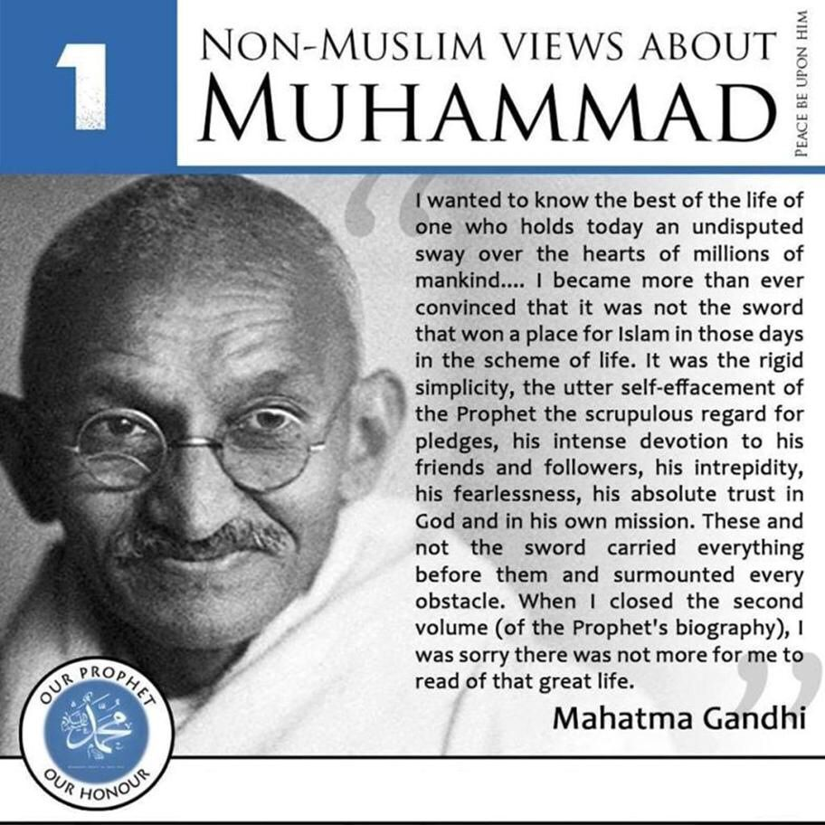

MUJTABA is waiting for you.......
Loging Hear
Email id :
Password :
 "Why are you disseminating sadness, crying and tears among people?" They complain. This is not sadness and tears for the sake of sadness and tears. This is for the sake of the values. The things that lie behind the lamentation, beating the chest and the head, and shedding tears are the dearest things that one might find in the treasure trove of humanity, and they are the divine spiritual values. The Shia are trying to uphold the fact that Hussein ibn Ali (AS) is the epitome of all these values. The Shia are trying to keep their memories alive. And if the Muslim Ummah keeps Imam Hussein's (AS) name and memory alive and follows him, it will overcome all the obstacles and the hardships. And that is why all of us in the Islamic Revolution, in the Islamic Republic, from the highest to the lowest echelons including the people, the authorities, the senior officials and our honorable Imam have relied on the issue of Imam Hussein and the issue of Ashura and people's mourning. The mourning has a symbolic as well as a realistic aspect. It binds hearts together and it broadens knowledge. Jan 9, 20081 / 3

Caption Text
2 / 3

Caption Two
3 / 3

Caption Three
YA ALI MADAD (as)
Why did Imam Hussain (a.s.) rise up? Did Imam Hussain (a.s.) rise up only for opposing a corrupt ruler like Yazid? Which were the true dimensions of Imam Hussain's movement?
Imam Hussain's (a.s.) movement is, indeed, perceivable via two perspectives—both of which are acceptable. Nonetheless, when put together, the two views show the extensive dimensions of this movement. One perspective involves the appearance of Imam Hussain’s action, which is a movement against a corrupt, deviated, suppressive and oppressive regime: Yazid’s Regime. But, at the heart of his action, there is a more important movement that the second perspective will lead to: the move against ignorance and humiliation of the mankind. In fact, even though Imam Hussain (a.s.) fights against Yazid, his extensive historical fight is not against the short-living and insignificant Yazid. Rather, his main fight is against mankind’s ignorance, abasement, deviation and humiliation. Indeed, Imam Hussain (a.s.) fights against such vices. An ideal government was formed by Islam. If we want to summarize the story of Imam Hussain (a.s.) in a few lines, we can say: humanity suffers from ignorance, oppression and discrimination. investigative minds.Imamate was transformed into the kingdom! The essence of Imamate is contradictory to the essence of the kingdom. These two are contradictory. Imamate is moral and spiritual leadership and compassionate and belief-related bonds with the people. Whereas, a kingdom is ruling via coercion, power and deluding, without any spiritual, compassion and belief-related bondsTHANKS YOU..
Loging Hear
Email id :
Password :
Zeinab al-Kubra (s.a.) is a prominent role model in history and shows the significance of a woman's presence in one of the most important events in human history. Blood gained a victory over the sword on the day of Ashura, and Zeinab al-Kubra (s.a.) was the cause of that victory. This was because the forces of righteousness were apparently defeated in a military fight in Karbala, but Zeinab al-Kubra's (s.a.) behavior was the factor that turned this apparent defeat into a permanent and decisive victory. That victory was due to the role she played after the day of Ashura. That is a very important point. The event proved that women are not on the periphery of history. It proved that women can have a central role in important historical events. This has been pointed out in several places in the Holy Quran as well. But Zeinab al-Kubra (s.a.) is a recent example and does not belong to ancient times. The story of her life is a tangible event. She played a brilliant role, making the enemies - who had apparently won the battle and slain all their opponents - feel humiliated in their own base. She branded them with permanent disgrace and turned their victory into a defeat. That was what Zeinab al-Kubra (s.a.) did. She proved that it is possible to turn feminine morality and modesty into glory and a great jihad.